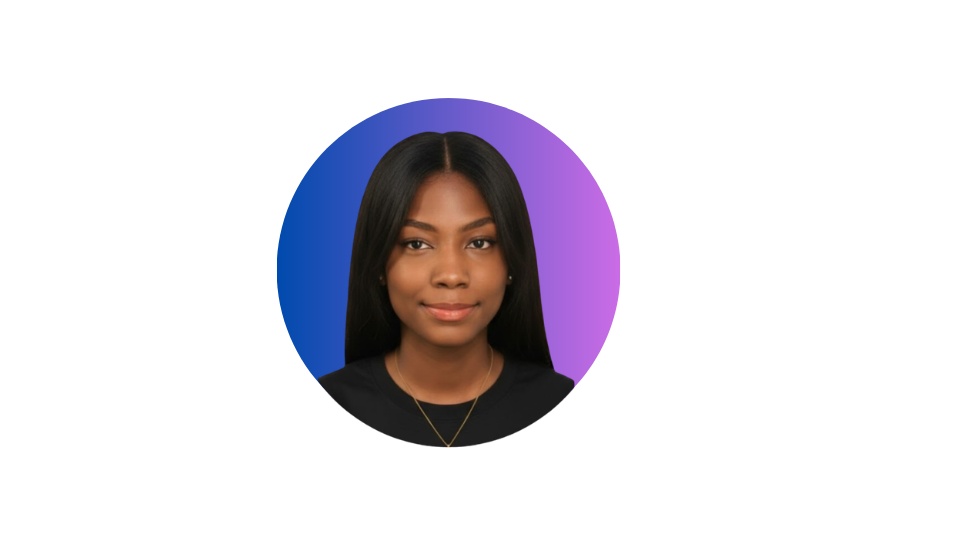

Tienda WordPress + WooCommerce
E‑commerce funcional construido desde cero, con gestión de productos, pagos y diseño responsive.
WordPressWooCommercePHPMySQL
Ingeniería Multimedia °9
Estudiante de Ingeniería Multimedia de noveno semestre,apasionada
por el desarrollo web, las experiencias interactivas, la interacción
humano-computadora (HCI), la programación y la inteligencia artificial.
Te invito a explorar los proyectos que han impulsado mi crecimiento académico y profesional.
Estudiante de Ingeniería Multimedia interesada en la intersección entre desarrollo web, producción audiovisual y diseño de interacción. Este portafolio reúne los proyectos en los que he trabajado, desde sitios funcionales hasta piezas visuales, documentados en video.

const estudiante = {
nombre: "Angeles",
carrera: "Ing. Multimedia",
stack: ["HTML", "CSS",
"JS","Adobe","Linux"
", "WordPress"],
pasion: "crear cosas"
};E‑commerce funcional construido desde cero, con gestión de productos, pagos y diseño responsive.
Descripción corta del proyecto.
Descripción corta del proyecto.
 HTML90%
HTML90% CSS85%
CSS85% JavaScript70%
JavaScript70% WordPress80%
WordPress80% Figma75%
Figma75% Premiere80%
Premiere80% After Effects65%
After Effects65% MySQL70%
MySQL70%